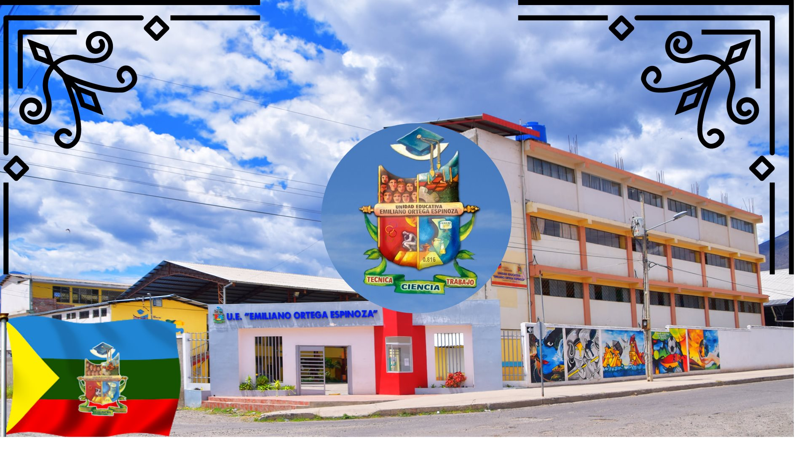
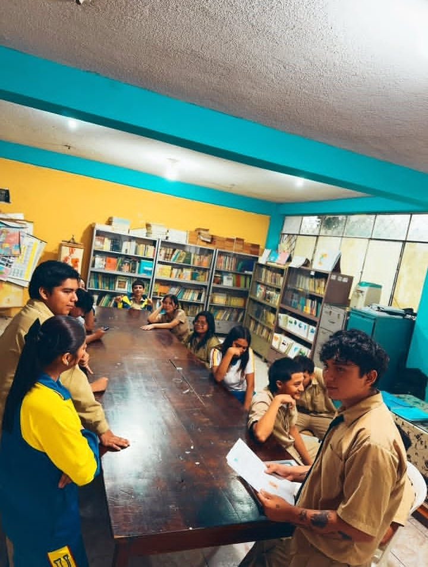
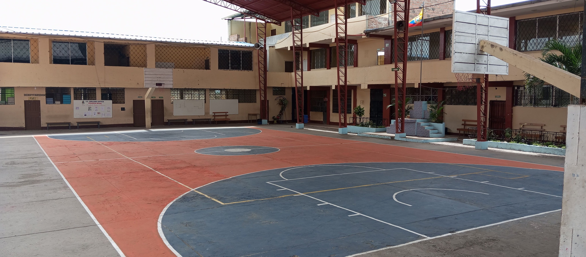
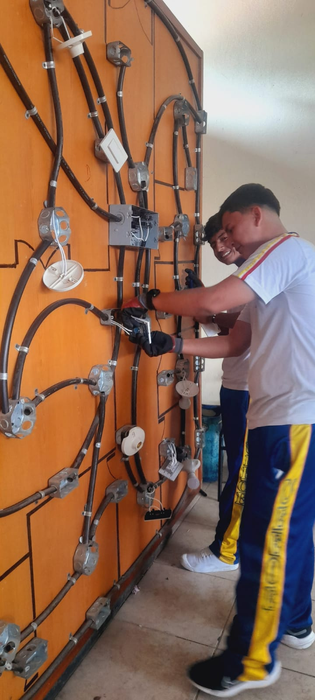
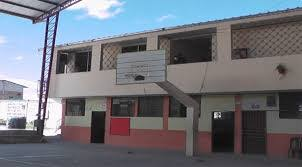
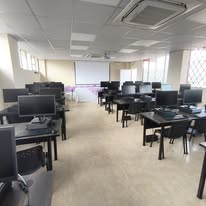

La Unidad Educativa Emiliano Ortega Espinoza (UEEOE), ubicada en el cantón Catamayo, provincia de Loja, cuenta con una infraestructura sólida, funcional y en constante proceso de mejoramiento, diseñada para responder a las necesidades académicas, tecnológicas, deportivas y recreativas de su comunidad educativa.

La institución dispone de tres bloques académicos principales que albergan aulas destinadas a los niveles de Educación Inicial, Educación General Básica, Bachillerato, y talleres y laboratorios para áreas técnicas . Las aulas están diseñadas con adecuada ventilación, iluminación natural y mobiliario ergonómico que favorece el aprendizaje.
Actualmente, la UEEOE impulsa la construcción y adecuación de nuevos laboratorios de ciencias e informática, canchas sintéticas, y mejora de la infraestructura en general, equipados con tecnología moderna para fortalecer la enseñanza práctica y experimental de los estudiantes.
.jpg)
Además, la institución cuenta con una biblioteca escolar equipada con material bibliográfico físico , fomentando la lectura, la investigación y el aprendizaje autónomo. También dispone de oficinas administrativas y sala de docentes que garantizan una adecuada gestión institucional, además el acceso a los laboratorios de informática no es exclusivo solo para estudiantes de la especiualidad, sino que el resto de la Unidad Educativa puede acceder a él cuando lo requiera siempre que sea con fines educativos.

En el ámbito deportivo y recreativo, la UEEOE dispone de una cancha múltiple techada, utilizada para actividades deportivas, eventos cívicos y culturales. Este espacio permite la práctica segura del deporte en cualquier época del año.
Asimismo, la institución cuenta con patios amplios, áreas verdes y zonas de recreación que favorecen la convivencia estudiantil, el descanso activo y el desarrollo social de los estudiantes.

La Unidad Educativa Emiliano Ortega Espinoza ha fortalecido su infraestructura tecnológica mediante la implementación progresiva de implementación de herramientas necesarias y funcionales en todas sus áreas como laboratories de ciencias, informática, talleres de electromecánica, y aulas de educación física y deportes.
Los laboratorios de informática están equipados con computadoras modernas y software educativo, permitiendo el desarrollo de competencias digitales. Además, se promueve el uso de plataformas virtuales para tareas, evaluaciones y comunicación académica.

La institución ha incorporado rampas de acceso y señalética para garantizar la inclusión de estudiantes con movilidad reducida. Estas acciones reflejan el compromiso institucional con la equidad y la inclusión educativa.
En materia de seguridad, la UEEOE cuenta con sistemas de vigilancia, guardianía permanente y salidas de emergencia señalizadas, cumpliendo con normas de prevención y protección para estudiantes y personal.

La Unidad Educativa Emiliano Ortega Espinoza mantiene un firme compromiso con la mejora continua de su infraestructura, trabajando conjuntamente con autoridades educativas, docentes, padres de familia y estudiantes.
Entre los proyectos futuros se contempla la construcción de un auditorio institucional y nuevos talleres técnicos especializados, con el objetivo de fortalecer el aprendizaje práctico y la formación integral de los estudiantes es especial en los bachilleratos técnicos que esta ofrece.
